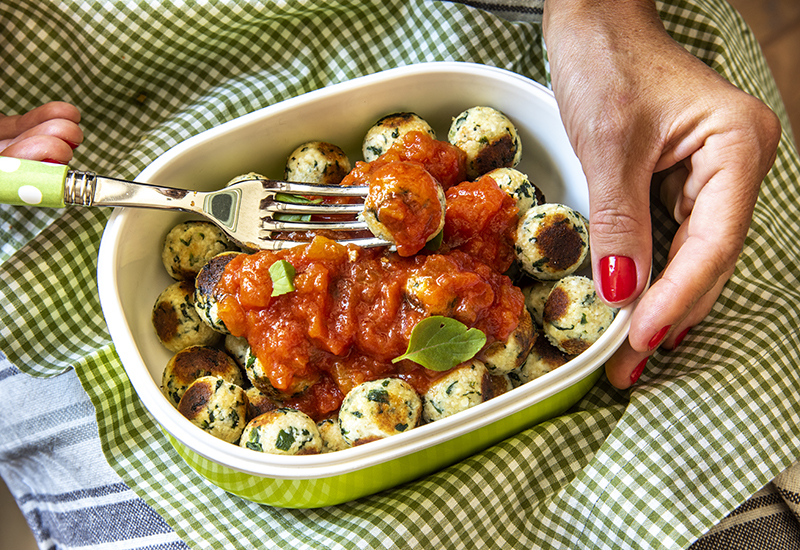

Receita de Nhoque de Ricota

Descrição
Deliciosa receita de nhoque de ricota para seu almoço!
Ingredientes
- 450 gramas de ricota fresca
- 2 ovos
- 50 gramas de queijo parmesão ralado fino
- 1/2 xícara de chá de farinha de trigo
- 1 colher de chá de sal
- 4 colheres de sopa de manteiga
Modo de Preparo
- Em uma tigela, coloque a ricota e esfarele-a com os dedos;
- Acrescente os ovos, o queijo ralado, o sal e misture bem com as maõs;
- Junte a farinha e amasse até a massa ficar lisa;
- Cubra com plástico filme e deixe descansar na geladeira por 15 minutos;
- Modele os nhoques em bolinhas achatadas;
- Em uma panela, ferva a água;
- Acrescente uma colher de sal e cozinhe os nhoques em porções pequenas;
- Leve os nhoques cozidos para uma frigideira com manteiga e deixe fritar levemente até dourar de ambos os lados;
- Sirva como preferir. Bom Apetite!